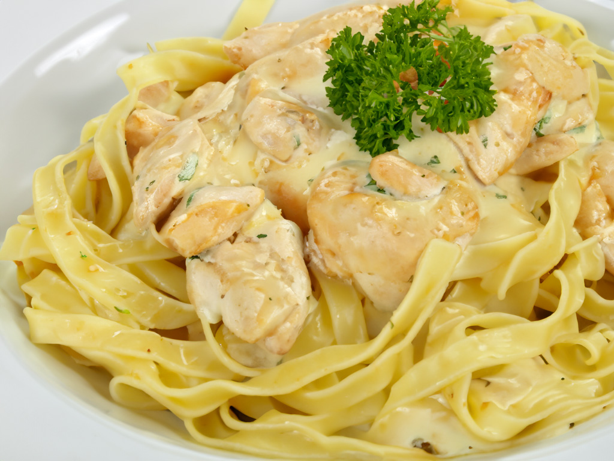

☜
Chicken Alfredo Pasta
"Savor the creamy elegance of our Chicken Alfredo Pasta! Tender fettuccine noodles embrace a luxuriously smooth Alfredo sauce, made with a blend of rich butter, heavy cream, and Parmesan cheese. Crowned with succulent slices of seasoned chicken, this dish is a symphony of flavors and textures that will transport your taste buds to culinary bliss. Garnished with a flourish of fresh parsley, each bite is a decadent journey into comfort and sophistication. Elevate your dining experience with this timeless Italian classic!"
Ingredients
- 400g fettuccine pasta
- 2 chicken breasts
- Salt, pepper, and Italian seasoning for seasoning chicken
- 120g (1/2 cup) unsalted butter
- 3 cloves garlic, minced
- 480ml (2 cups) heavy cream
- 100g grated Parmesan cheese
- Salt and pepper to taste
- Chopped fresh parsley for garnish
Steps
-
Cook the Pasta:
- Cook fettuccine pasta according to package instructions until al dente.
- Drain and set aside.
-
Prepare the Alfredo Sauce:
- In a saucepan, melt butter over medium heat.
- Add minced garlic and cook until fragrant.
- Stir in heavy cream, Parmesan cheese, salt, and pepper.
- Cook the Alfredo sauce until it thickens, stirring constantly.
-
Cook the Chicken:
- Season chicken breasts with salt, pepper, and Italian seasoning.
- In a separate skillet, cook chicken breasts until browned and fully cooked.
- Slice the cooked chicken into strips.
-
Assemble the Dish:
- Toss the cooked pasta in the Alfredo sauce until well coated.
- Place the Alfredo-coated pasta on a plate.
- Top with sliced chicken.
- Garnish with chopped fresh parsley and additional Parmesan cheese.
- Serve immediately for a creamy and satisfying Chicken Alfredo Pasta!